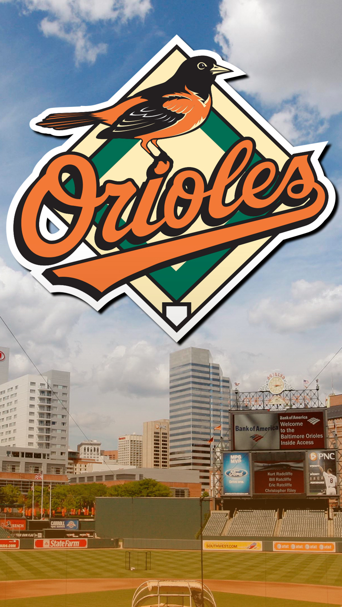
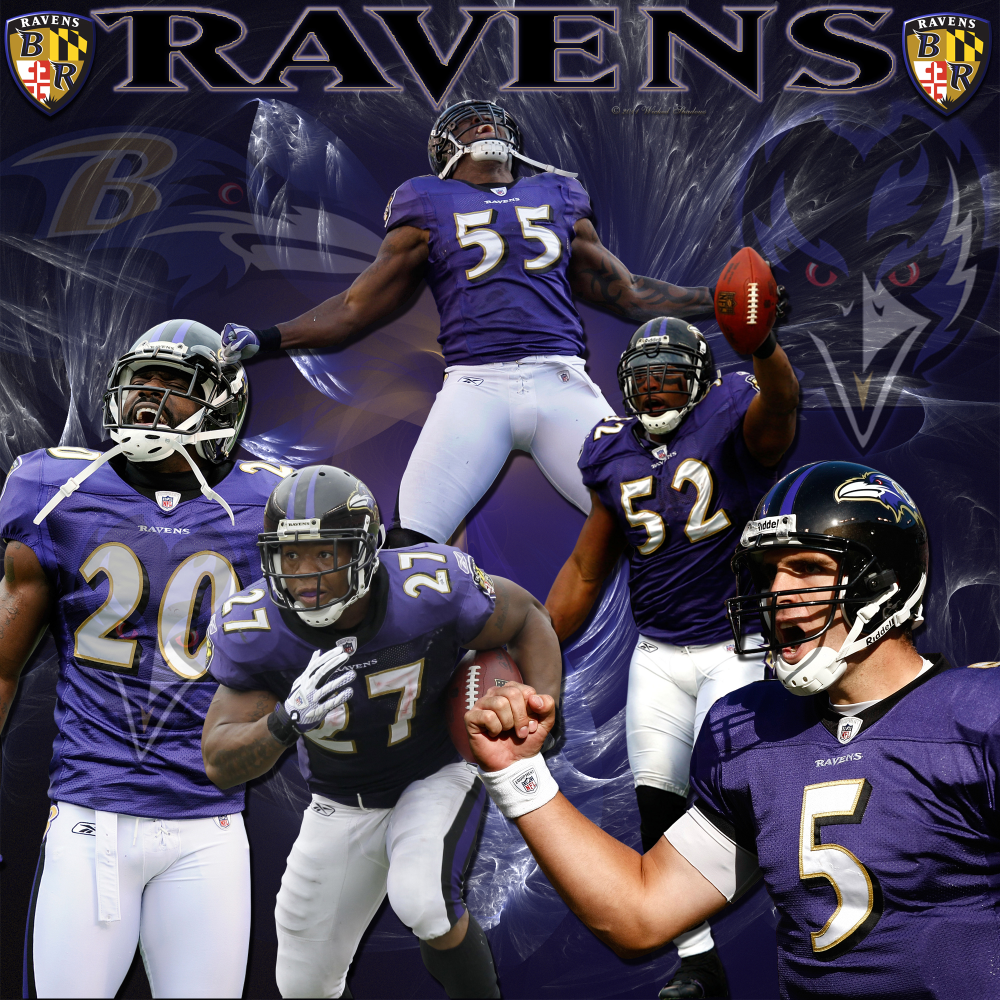
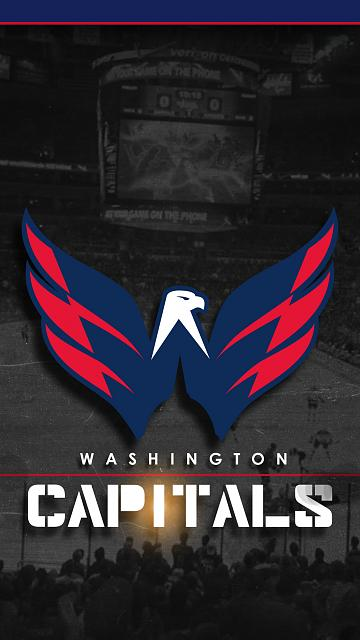

Currently a student at Le Wagon full-stack development bootcamp. Chemical Engineer from the United States hoping to use web development with an entrepreneurial / engineer mindset to solve everyday problems.
|  |
The Baltimore OriolesThe Baltimore Orioles are an American professional baseball team based in Baltimore, Maryland. The Orioles compete in Major League Baseball (MLB) as a member of the American League East division. As one of the AL's original eight charter franchises when the league was established in 1901, this particular franchise spent its first year as a major league club in Milwaukee, Wisconsin, as the Milwaukee Brewers before moving to St. Louis, Missouri to become the St. Louis Browns. After 52 often-beleaguered years in St. Louis, the franchise was purchased in November 1953 by a syndicate of Baltimore business and civic interests. The Orioles adopted their team name in honor of the official state bird of Maryland. Nicknames for the team include the "O's" and the "Birds". |
 |
The Baltimore RavensThe Baltimore Ravens are a professional American football team based in Baltimore, Maryland. The Ravens compete in the AFC North division of the National Football League. The team plays its home games at M&T Bank Stadium.The Ravens were established in 1996, when Art Modell, who was then the owner of the Cleveland Browns, announced plans to relocate the franchise from Cleveland to Baltimore. The Ravens have been one of the more successful franchises since their inception, having qualified for the NFL playoffs ten times since 2000, with two Super Bowl victories (Super Bowl XXXV and Super Bowl XLVII), two AFC Championship titles (2000 and 2012), 15 playoff victories, four AFC Championship game appearances (2000, 2008, 2011 and 2012), four AFC North division titles (2003, 2006, 2011 and 2012), and are currently the only team in the NFL to hold a perfect record in multiple Super Bowl and Thanksgiving Day appearances. The Ravens organization has been led by general manager Ozzie Newsome since 1996, and has had three head coaches: Ted Marchibroda, Brian Billick, and John Harbaugh. With a record-breaking defensive unit in their 2000 season, the team established a reputation for relying on strong defensive play, led by players like middle linebacker Ray Lewis, who, until his retirement, was considered the "face of the franchise. The team is owned by Steve Bisciotti and valued at $1.5 billion, making the Ravens the 24th-most valuable sports franchise in the world. |
|  |
The Washington CaptialsThe Washington Capitals (often shortened to Caps) are a professional ice hockey team based in Washington, D.C. They are members of the Metropolitan Division of the Eastern Conference of the National Hockey League (NHL). Since their founding in 1974, the Capitals have won one conference championship (in 1998), and ten division titles. In 1997, the team moved their home ice hockey rink from the suburban Capital Centre (located in Landover, Maryland) to the new MCI Center (now Capital One Arena), in Washington, D.C. Businessman Ted Leonsis has owned the team since 1999, and has revitalized the franchise by drafting star players such as Alexander Ovechkin, Nicklas Backstrom, Mike Green and Braden Holtby. The 2009–10 Capitals won the franchise's first-ever Presidents' Trophy for being the team with the most points at the end of the regular season. They won it a second time in 2015–16, and did so for a third time the following season in 2016–17. |